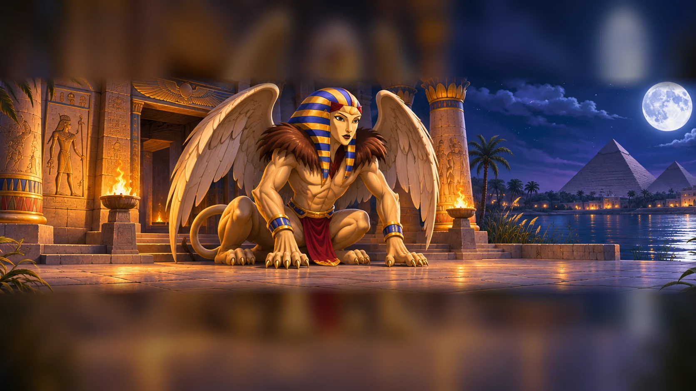
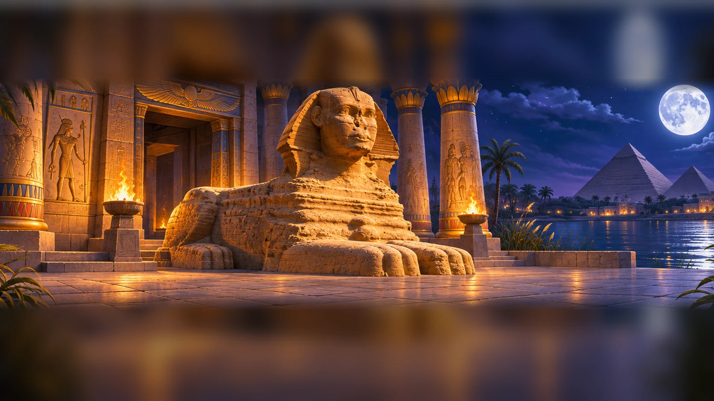

Храм загадок Сфинкса
⌂ Карта



ЕГИПЕТ · ХРАМ СФИНКСА
Сфинкс не пропускает к храму. Он задаст загадки: сначала отгадай вслух, потом выбери картинку!
Загадка 1 из 6
ЗАГАДКА
Сфинкс снова стал каменным хранителем. Теперь Лада может войти в библиотеку Тота!